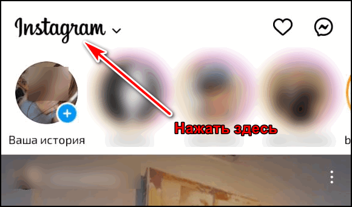
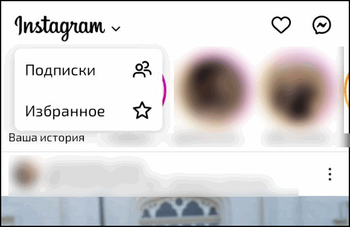
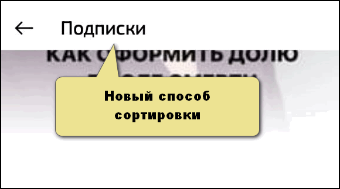
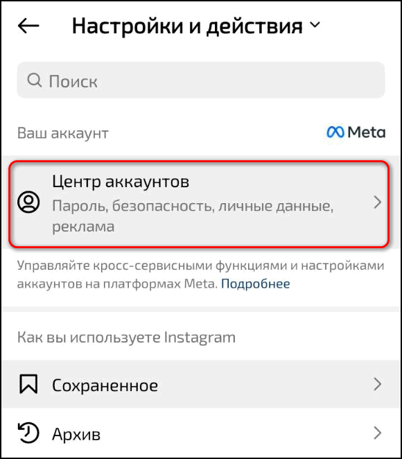
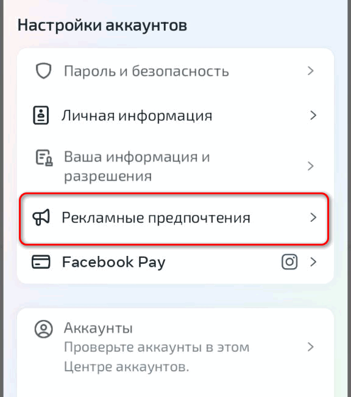
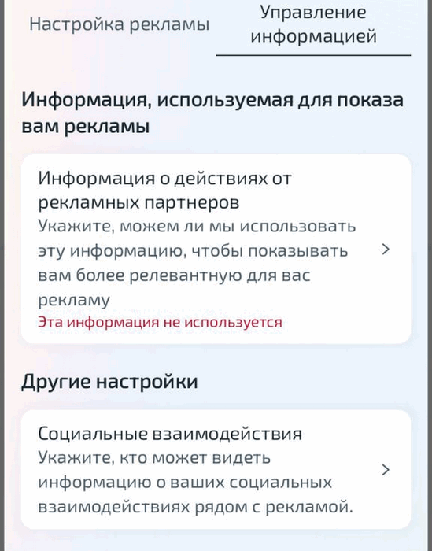

Как настроить ленту в Инстаграм: от избранных до новых

Настроить Ленту в Инстаграме* поможет отдельная функция, о которой мало кто знает. На выдачу последних записей влияют подписки, рекламные рекомендации и даже отметки «Мне нравится» у друзей.
Новые публикации в Ленте
В социальной сети отображаются записи, которые были последними опубликованными у друзей. Кроме этого, рекомендованы посты, которые соответствуют интересам пользователя и рекламные публикации. Инстаграм* сортирует записи по принципам:
- интересные посты;
- недавно опубликованные.
Отсортировать Ленту можно несколькими способами:
- в хронологическом порядке. По дате размещения;
- по подпискам;
- только список «Избранное».
Чтобы в Ленте реже появлялись записи, не отвечающие интересам пользователя, ему стоит отписаться ото всех неинтересных аккаунтов, а также проверить кто из друзей отмечает такие посты как «интересные».
Показывать избранное в Инстаграме* в Ленте
Один из вариантов, как отсортировать посты в Ленте – указать показ только для перечня «Избранное». Это список, куда можно добавить близких друзей и размещать для них публикации, Истории. То есть, ограниченный список пользователей с особыми правами на просмотр записей. Настроить показ постов только по списку «Избранное»:
- Зайти в Инстаграм* - перейти в «Ленту».
- Нажать сверху по надписи «Instagram*».

- Появится выпадающий список с вариантами: «Подписки» и «Избранное».
- Выбрать второй вариант.

Пользователь будет перенаправлен на дополнительную страницу, где будут отобраны только записи близких друзей.
Максимальное количество пользователей, которое можно добавить в этот список – 50.
Отсортировать в хронологическом порядке
Хронологическим считается сортировка по «Подпискам». Она находится в том же разделе, что и «Избранное». Это пользователи на которых была оформлена подписка и чьи записи были недавно добавлены.

Но установить по умолчанию такую страницу не получится. Поэтому пользователю придется постоянно переключаться. Чтобы настроить хронологическую Ленту в Инстаграме*, нужно перейти к показу постов от друзей и также нажать сверху по названию социальной сети. Далее появится вариант «Подписки», перейдя в который, пользователь увидит все последние записи.Удаляем ненужные подписки в Инстаграме*
Чтобы отсортировать Ленту, необязательно указывать каждый раз «Подписки» или «Избранное». Можно отписаться от неинтересных страниц, даже если те находятся под скрытыми аккаунтами. Как отписаться:
- Зайти в социальную сеть – перейти в свой профиль.
- Нажать сверху по надписи: «Подписки».
- Выбрать: «Отписаться».
Если аккаунт был приватным, то появится уведомление, что при отписке придется подписываться заново и получать разрешение у владельца страницы.
Удалить подписки можно по-одному или довериться приложению Unfollower, где доступно удаление первых десяти из списка. При отписках нужно следовать лимитам – не более 100 в сутки.
Убрать рекламные предложения
С помощью раздела: «Рекламные предпочтения» можно убрать рекомендации рекламы или хотя бы снизить их количество в Ленте. Чтобы убрать рекламу:
- Зайти в приложение – Настройки.
- Центр управления аккаунтами – Рекламные предпочтения.

- Управление информацией – Используемая для показа.
- Запретить – Сохранить изменения.

- Социальные взаимодействия – Кто может видеть.
- Только я.

Собирать информацию о действиях такого пользователя не получится, а следовательно – рекламы станет меньше, но она будет менее персонализированной. Чтобы меньше получать рекламы, нельзя переходить по объявлениям. В Инстаграме* это помечено соответствующей надписью, под названием страницы. На показ также влияют объявления, которые были просмотрены на связанном аккаунте в Facebook*. Пользователи с закрытым типом страницы получают рекламных постов меньше всего. Потому что отследить действия такого человека не получится.
Неинтересные записи: где посмотреть
Настроить Ленту в Инстаграм* по интересам стало доступно после введения двух функций: «Интересное» и «Не рекомендовать мне больше». Под публикациями появляется пометка: «Эта запись была вам интересна?» и пользователь может выбрать вариант: Да или Нет. Вопрос чаще появляется при длительном просмотре Reels и при постоянном взаимодействии Лента будет персонализирована. Владелец страницы может полностью изменить свои интересы, если будет регулярно отмечать. Но случается, что интересный пост был случайно отправлен не в ту папку и тогда:
- Зайти в Инстаграм* - Настройки.
- Рекомендуемый контент – Нравится и не нравится.
- Перейти по категориям и отметить нужные посты.
В том же разделе находится пункт «Не показывать рекомендуемый контент». Это значит, что в течение 30 дней в Ленте не появятся записи блогеров, которые оплатили таргетированную рекламу. Выключать рекомендации возможно не чаще, чем раз в три месяца. При следующем включении пользователь будет предупрежден на какой период функция не будет доступна.